After completing this lesson, you’ll be able to:
FME transformers have parameters whose value can be supplied by attributes or user input. The same is still true of transformers inside a custom transformer definition. However, these inputs must be flexible because a custom transformer can be reused in multiple places.
Many transformer parameters can be set up to accept values from attributes.
Take this custom transformer that creates custom map labels:
Inside that custom transformer is a LabelPointReplacer transformer. It uses AddressID as the value for the label:
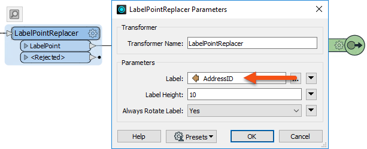
As created, the custom transformer works fine. However, consider if that transformer is used in a context where AddressID does not exist:
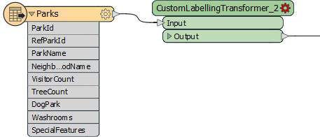
This transformer is flagged as "incomplete". It is used in a scenario where AddressID is not available.
Besides attributes, most FME parameters can be set up to accept values from User Parameters.
In a similar setup to above, here a custom transformer contains a LabelPointReplacer transformer whose label value is selected by user input:
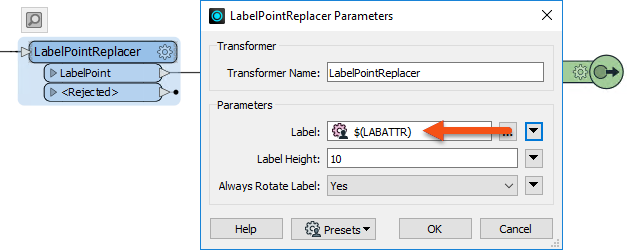
Here, the issue is not where the custom transformer is used but its duplication. If each instance of the custom transformer uses the same user parameter, they will all get the same input.
We need a mechanism for the user to enter different values per transformer instance.
As an analogy, consider a mobile device such as a cell phone. On my phone, I can change the default language from English to (for example) Swedish. The manufacturer implemented this because they cannot tell where the phone might be used, by whom, or what language might be used for input.
In much the same way, an FME custom transformer could be used outside of its expected area. The author must, therefore, implement the transformer to be adaptable to different inputs. This can be done either automatically or manually...
Let's look at how we can handle the complications that might arise if a custom transformer is reused.
To take the handling of user parameters first, when a transformer with a published parameter is incorporated into a custom transformer, the published parameter is automatically moved from the Navigator window of the main canvas to the Navigator window of the custom transformer:
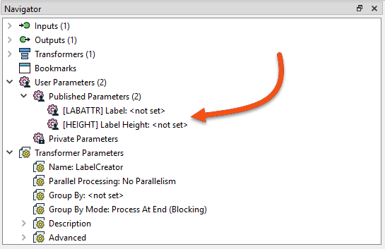
This means the user is no longer prompted for these when running the workspace! But... those parameters instead become available on the Custom Transformer itself:
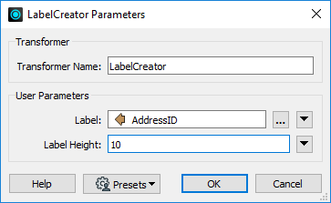
That way, the parameters can be set differently for each instance of the custom transformer. If user input is required at run-time, then these new parameters can be published and shared if you want them all to have the same value.
Now, let's look at how attributes are handled. When a custom transformer is created, one of the parameters in the Create Custom Transformer dialog is labeled Attribute References:
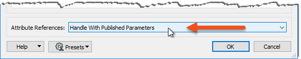
"Handle with Published Parameters" is the automatic way of handling attribute references in the custom transformer. It ensures that every attribute referenced within the custom transformer is supported outside the transformer definition.
It does that by creating a new user parameter for each attribute:
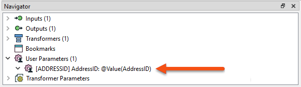
The transformer inside the custom transformer still references the attribute name, but FME maps the user parameter to that attribute.
When the custom transformer is used in a place without the required attribute, it is still flagged as "incomplete." However, the user parameter allows the workspace author to select an available attribute:
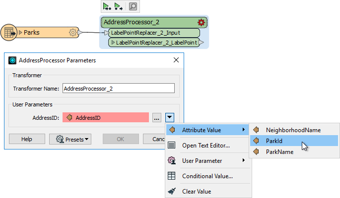
So (in the above), AddressID is unavailable, but the author can select a different attribute instead.
This illustrates how FME has automatically solved the attribute reference problem using user parameters. To make the custom transformer more generic, the workspace author can change the prompts on these parameters from "AddressID" to "Select an ID Attribute to Process."
As we know, custom transformers can be edited after creation.
The "Handle with Published Parameters" setting handles attributes used in a custom transformer only when it is created. There also needs to be a mechanism for handling future edits to a custom transformer (or where the custom transformer is created from scratch).
Attributes entering a custom transformer are handled using a setting inside the transformer definition.
For example, an author puts a StringConcatenator inside a newly created custom transformer. The author wishes to concatenate AddressID and PostalCode.
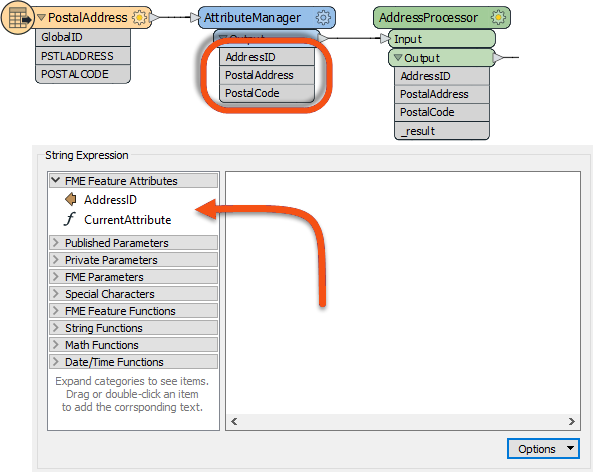
AddressID is available in the custom transformer because it was used when the custom transformer was created (and Handle With Published Parameters was set).
However, PostalCode is not available. It was not being used when the custom transformer was created.
Therefore, the author must expose that attribute. They do so by inspecting the parameters for the Input port, where they can specify other incoming attributes to expose:
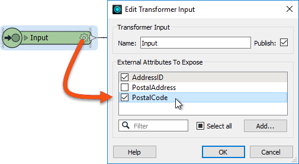
Now, PostalCode becomes available to the StringConcatenator and, additionally, is made into a user parameter so that back on the main canvas, the custom transformer can accept a different attribute selection should PostalCode not be available.
Besides incoming attributes, there is also the question of what attributes should emerge from the output of a custom transformer.
Best practice suggests that we should only output attributes that the user expects. We should hide or remove any attributes that are part of a calculation or any attributes that are otherwise generated inside the custom transformer but aren’t necessary for the output.
Here, a custom transformer calculates the average area of several polygon features. It has renamed ports and a specific output port to deal with bad features, but it is outputting more attributes than are helpful:

The workspace author should clean up this output. They can do this by visiting the custom transformer definition, viewing the output port object, and they're choosing which attributes are to be output:
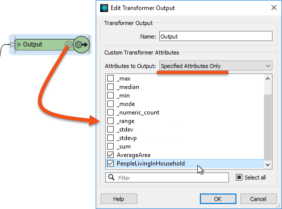
The Attributes to Output setting gives the option of outputting all attributes or only those that have a checkmark next to them, as above.
⭐New for FME 2023.0: we've added conditional visibility to user parameters, allowing you to have parameters selectively appear to the end user based on how they have configured other parameters.
Combine this feature with the Group Box option in the Parameter Manager and you can replicate much of the function of native FME transformers.